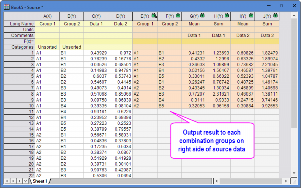
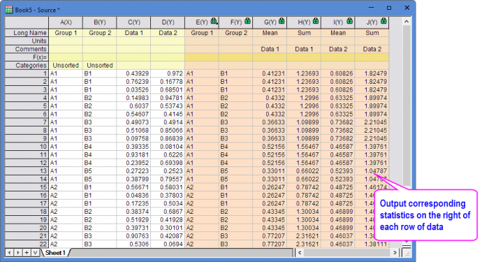

Nebeneinander angezeigte Statistik
Side-by-Side-Statistics
Einführung
Nebeneinander angezeigte Statistik wird für Spaltenstatistiken mit Gruppe verwendet und rechts von jeder Datenzeile ausgegeben.
Das Ergebnis kann:
- kombinierte Gruppen der rechten Seite der Quelldaten ausgeben.

- entsprechende Statistiken rechts von jeder Datenzeile ausgeben.

Nebeneinander angezeigte Statistik durchführen
Um deskriptive Statistiken nebeneinander zu berechnen:
- Wählen Sie Statistik: Deskriptive Statistik: Nebeneinander angezeigte Statistik im Menü.
- Legen Sie in den Zweigen Eingabedaten und Gruppen den Datenbereich fest, der analysiert werden soll. Legen Sie dann die deskriptive Statistik im Zweig Kennwerte fest.
- Geben Sie das Ausgabeergebnis von jeder Kombinationsgruppe rechts von den Quelldaten an oder geben Sie die entsprechende Statistiken rechts von jeder Datenzeile aus.
- Durch Klicken auf OK wird ein Ergebnis rechts von den Quelldaten erzeugt.
|
Themen, die in diesem Abschnitt behandelt werden:
|